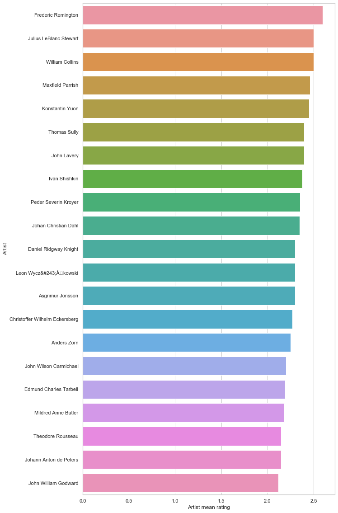
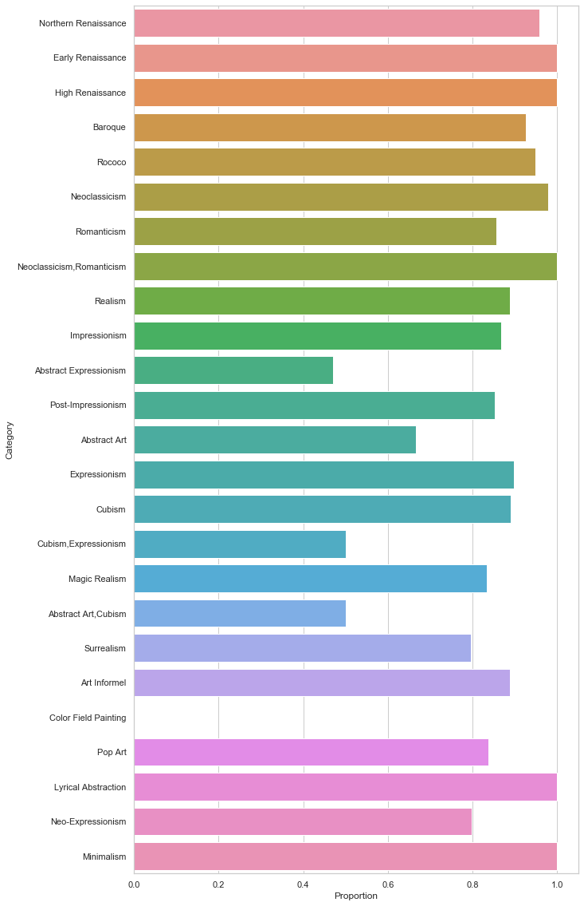

WikiArt
information visualization project2
Main section
We segmented our analysis mostly by category and time. In the first part of our analysis, we looked at average ratings and annotation ratio by category, then average ratings and annotation ratio by time. In the second part of our analysis, we looked into the average rating of top 30 artists.In addition to ratings by time, annotation ratio, and artists, we wanted to find out more about the portraits by investigating the face to body+face ratio. We also wanted to find out the general trend in titles across all portraits by generating a word cloud.
Below three plots show average rating and average annotation ratio by category. In this part, we explore the relationships of rating versus style, category, and timeline. The questions we raise here are what factors affect the average rating? Do people favor classic art or contemporary art more? And do people endorse a specific style of art? The final visualizations tell us that people appreciate artworks from Renaissance and Post Renaissance styles the most and the latter is most appreciated. The interesting finding is that people love realistic art categories more than abstractive categories. Shown in Figure 2, Realism has almost the highest average rating but the abstract art category obtains the lowest average score. When it comes to rating versus timeline, there is no specific trend in the 15th to 19th century, but the artworks in the 20th and 21st centuries get a lower score. This observation gives up the answer that people like classic artworks more than the contemporary artworks.


The annotation can directly tell us people’s opinions about artwork and the most possible feelings expressed by the work. We want to understand how what’s the artwork’s implication and how it changes over time. For example, what feelings are expressed most by artwork? Which feeling(s) do artwork express most in different eras?
The box plot below is the general annotation ratio distribution for all the art work. The first impression from the plot is that people have very diverse ideas for art work. There are also 4 annotations standing out, anticipation, happiness, surprise and trust, which means more artwork is considered to express these 4 feelings, while few of artwork is considered expressing shame, shyness and neutral.
The stacked bar chart below shows the annotation distribution for each category. The annotation for each artwork is determined by its annotation with highest ratio. This agrees with the general observation that the 4 feelings are the mainstream ones considered to be expressed. An interesting thing to see is that “fear” has a relatively high count, in addition to the 4 main feelings.

In this analysis, we take a look at annotation’s change through time, from which we can have an idea of how the artwork’s expression/topic changes in the past hundreds of years. We calculate each annotation’s average annotation ratio in a century level. For the 4 main annotations, happiness and trust tend to decrease in contemporary art, while anticipation and surprise tend to increase.
In the second part of the analysis, we take a closer look at the artists and their artworks. Here we show the mean rating of top 30 artists since they are too many artists to be displayed. In total there were approximately 990 artists. Each artist is assigned a value called “Artist mean rating”, this is calculated by taking the mean of all the artist’s artworks’ mean rating. Referencing the plot below, the maximum artist mean rating is a little over 2.5. The exact maximum artist mean rating is 2.6. Analysis also tells us that the mean of artist mean rating is 0.84, and minimum artist mean rating is -1.5. This shows that there is a wide difference in mean of artist mean rating across centuries. 
Since the column “Face or body” exists, we had a fun idea of finding out if a face to face+body ratio pattern exists in the portraits. Note that besides the values “face” and “body”, “none” exists too, but was eliminated from analysis. We also sifted out categories with less than 5 counts as there are 44 categories in total. Below shows the plot of face to total (as represented by face+body) proportion by category. In general, the majority of the categories have a score of 1, suggesting that most of the categories are face-related artworks. Color field painting has a score of 0, implying that none of the artworks are face-related. Last but not least, Abstract expressionism has the lowest face proportion score. 
Finally, we wanted to find out a general overview of how titles are generated. We generated a word cloud using all of the artwork titles. Stop words are removed from titles to ensure that we are seeing important words in the titles. However, after the initial round of generating the word cloud, the biggest word that showed up was “Untitled”. Since the size of the word corresponds to its frequency, the word “Untitled” has the highest frequency among all words in titles. The word “Untitled” simply meant that the artwork is unnamed, we thus removed any titles consisting of the word “Untitled”. Referencing the word cloud, we see that words such “Portrait”, “Composition”, and “Landscape” are popular in titles. We could infer that artists tend to name their artworks according to the artwork’s orientation.
Additional details
Data processingData processing for each plot is addressed in the description in the main section. For part one, the first step is to find the average rating over different styles, categories, and timelines which we choose century here. However, a single data point of an average rating simplifies the information too much; thus, we use the rating distribution instead to provide more details for the audiences.
Design process
Each member spent a couple of days looking at the data, then all came together to brainstorm, and share ideas and insights. Given the ideas, we then write up a storyline that flows with the plots for the convenience and enjoyment of the reader.
For rating distribution versus different kinds of classes, after we have the rating distribution of each class, the next question is how do we plot the ordinal (style, timeline) or categorical (category) classes? The ordinal classes are plotting by the time of course. Although category class looks exactly like the categorical representation, it contains ordinal information inherently, so we also plot it by the order of the first event of each category. Then, we’ve tried the bar chart with error bars, but this representation is confusing for users because the bar chart derived from the bottom of the plot will influence people’s judgment of error bars. Moreover, the error bar is not intuitive to show the data distribution compared to the violin chart or gradient chart. Therefore, we select the violin plot to present the rating distribution over different kinds of classes.
For the general annotation distribution, a boxplot is used. Boxplot can show the distribution of data using quantiles, and we can plot multiple annotations’ distributions in a single plot, though which we can compare the distributions easily. If we use plots like CDF to show the distributions, it’s difficult to compare across different annotations. For the annotation distribution by category, since we want to see the ratio of each annotation, a stacked bar chart is a perfect visualization which can not only show the ratio but also make it easy to compare across categories. To show the annotation change over time, we aggregated the artwork in century level and calculate the mean ratio for each annotation, and use a line plot to show the trend, since line plot is straightforward in terms of showing temporal change.
"Above and Beyond"
Unusual representations: Besides the usual line and bar plots, we included uncommon representation such as box plot, violin plot, and word cloud in the analysis.
Style: To standardize all plots in the analysis, all members used Seaborn, a package in Python for beautifying plots, to ensure that style in all plots is consistent and aesthetic. While the stacked barchart was generated in Tableu, the colors were coordinated with plots generated with Seaborn.
Interesting Tasks: One of the tasks that we thought was interesting was finding out the general words that were used in titles across all artworks. As mentioned in the main section, we found out that artists tend to prefer naming their artworks according to their orientation. Upon closer look, one would also realize that words such as “virgin”, “Christ”, “saint” can also be found, suggesting that artworks are usually related to Catholicism and Christianity.
Perceptually-Informed Design: In word cloud, the size of the word corresponds to the frequency. The bigger the word, the higher its frequency. Bigger words tend to attract more attention from reader given that it is sprawled across the plot. We want the reader to notice the bigger words than the smaller words since the word cloud gives an overview of all artwork titles.
Integrate Imagery: We added images in the first part to give users impressions about realism and abstract art.
Team roles
We split our work evenly, each member generated 3 plots.